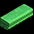

ギルド石像一覧
● 1つの石像を3部位以上作ることで、2つ目以降の効果が有効になります。● ギルド石像は各属性の元素を集めて作れます。各部位を作るのに200個の各元素が必要です。
● 元素は元素抽出機をカバンに入れて敵を倒すことで、低確率で手に入ります。
● 元素抽出機は、ギルドホールの石像パーツ管理人から無料で入手できます。
● 複数所持の場合は、一番右下の元素抽出機が有効になります。
● [元素抽出機Lv * 100 ]レベル以上の敵を倒すと0.1%程度の確率で元素を入手できます。
● ただし、2レベル以上の石像を作る場合、攻城戦で勝ってGH Rankを該当レベルまで上げる必要があります。
● 200個集まったら、ギルドマスターが古都ブルンネンシュティグ バウマン(MAP右下)に話しかけて作成できます。
各レベルの元素入手方法
| Lv1 | Lv2 | Lv3 | Lv4 | Lv5 | |
|---|---|---|---|---|---|
| 名称 | 元素 | 結晶 | 破片 | かけら | 清水 |
| 要求される最小敵Lv | 100 | 200 | 300 | 400 | 500 |
| およその確率 | 0.10% | 0.05% | 0.03% | 0.03% | 0.02% |
各石像の詳細
| ナルの神像 | ||||||
|---|---|---|---|---|---|---|
| パーツ | 効果 / レベル | 1 | 2 | 3 | 4 | 5 |
| 頭部 |
火ダメージ吸収(%) | +1 | +2 | +3 | +4 | +5 |
| 攻城戦で敵に与えるダメージ増加(%) | +1 | +2 | +3 | +4 | +5 | |
| 胴体 |
火ダメージ抵抗(%) | +1 | +2 | +3 | +4 | +5 |
| フィールド火抵抗力ペナルティー減少 (%) |
3 | 6 | 9 | 12 | 15 | |
| 翼 |
防御力(%) | +1 | +2 | +3 | +4 | +5 |
| 力の魔法エンチャント水晶 | 2万 Gold | |||||
| 運の魔法エンチャント水晶 | 2万 Gold | |||||
| 光抵抗の魔法エンチャント水晶 | 200万 Gold | |||||
| 大地攻撃のエンチャント水晶 | 100万 Gold | |||||
| 尻尾 |
ギルドペット・オビティアン数 | +2 | +4 | +6 | +8 | +10 |
| ギルドペット・オビティアン数 | +1 | +2 | +3 | +4 | +5 | |
| 台座 |
決定打抵抗(%) | +2 | +4 | +6 | +8 | +10 |
| 最大副ギルドマスター数 | +1 | +1 | +2 | +3 | +4 | |
| ネーンの杯 | ||||||
| パーツ | 効果 / レベル | 1 | 2 | 3 | 4 | 5 |
| 蓋 |
水ダメージ吸収(%) | +1 | +2 | +3 | +4 | +5 |
| 攻城戦で敵から受けるダメージ減少 (％) |
+1 | +2 | +3 | +4 | +5 | |
| 器 |
水ダメージ抵抗(%) | +1 | +2 | +3 | +4 | +5 |
| フィールド水抵抗力ペナルティー減少 (%) |
3 | 6 | 9 | 12 | 15 | |
| 受け皿  |
攻撃速度(%) | +2 | +4 | +6 | +8 | +10 |
| 敏捷性の魔法エンチャント水晶 | 2万 Gold | |||||
| 火攻撃の魔法エンチャント水晶 | 100万 Gold | |||||
| 水抵抗の魔法エンチャント水晶 | 200万 Gold | |||||
| 取っ手 |
ギルドペットクリスタルウォーター数 | +2 | +4 | +6 | +8 | +10 |
| ギルドペットクリスタルウォーター数 | +1 | +2 | +3 | +4 | +5 | |
| 盆 |
呪い抵抗(%) | +2 | +4 | +6 | +8 | +10 |
| 最大ギルド委員数 | +2 | +2 | +3 | +4 | +5 | |
| スルの杖 | ||||||
| パーツ | 効果 / レベル | 1 | 2 | 3 | 4 | 5 |
| グリップ |
風ダメージ吸収(%) | +1 | +2 | +3 | +4 | +5 |
| ギルドペット攻撃/アクション速度増加 (秒) |
+0.1 | +0.2 | +0.3 | +0.4 | +0.5 | |
| シャフト |
風ダメージ抵抗(%) | +1 | +2 | +3 | +4 | +5 |
| フィールド風抵抗力ペナルティー減少 (%) |
3 | 6 | 9 | 12 | 15 | |
| 杖先 |
移動速度(%) | +4 | +8 | +12 | +16 | +20 |
| 知恵の魔法エンチャント水晶 | 2万 Gold | |||||
| ダメージの魔法エンチャント水晶 | 20万 Gold | |||||
| 風攻撃の魔法エンチャント水晶 | 100万 Gold | |||||
| 闇抵抗の魔法エンチャント水晶 | 200万 Gold | |||||
| ストラップ |
ギルドペット・アストロボウ数 | +2 | +4 | +6 | +8 | +10 |
| ギルドペット・アストロボウ数 | +1 | +2 | +3 | +4 | +5 | |
| ヘッド飾り |
異常系抵抗(%) | +2 | +4 | +6 | +8 | +10 |
| ギルドペット・アストロボウ ダメージ増加(%) | +1 | +2 | +3 | +4 | +5 | |
| ケーメンの冠 | ||||||
| パーツ | 効果 / レベル | 1 | 2 | 3 | 4 | 5 |
| 中央の宝石 |
大地ダメージ吸収(%) | +1 | +2 | +3 | +4 | +5 |
| ギルド戦略ポイント攻撃/防御効率増加 (%) |
+2 | +4 | +6 | +8 | +10 | |
| 本体 |
大地ダメージ抵抗(%) | +1 | +2 | +3 | +4 | +5 |
| フィールド大地抵抗力ペナルティー減少 (%) |
+3 | +6 | +9 | +12 | +15 | |
| 枠飾り |
物理、魔法抵抗(%) | +1 | +2 | +3 | +4 | +5 |
| 健康の魔法エンチャント水晶 | 2万 Gold | |||||
| 水攻撃の魔法エンチャント水晶 | 100万 Gold | |||||
| 火抵抗の魔法エンチャント水晶 | 200万 Gold | |||||
| CPの魔法エンチャント水晶 | 40万 Gold | |||||
| ※物理、魔法抵抗と書いてあるが、実際はダメージ増加。 | ||||||
| 冠の装飾 |
ギルドペットダッシュブレード | +2 | +4 | +6 | +8 | +10 |
| ギルドペットダッシュブレード | +1 | +2 | +3 | +4 | +5 | |
| 冠の台 |
低下系抵抗(%) | +2 | +4 | +6 | +8 | +10 |
| ギルドペット・ダッシュブレード ダメージ増加(%) | +1 | +2 | +3 | +4 | +5 | |
| ラークの刀 | ||||||
| パーツ | 効果 / レベル | 1 | 2 | 3 | 4 | 5 |
| 柄頭 |
光ダメージ吸収(%) | +1 | +2 | +3 | +4 | +5 |
| 攻城戦の城門攻撃/防御効率増加 (%) |
+1 | +2 | +3 | +4 | +5 | |
| 刀身 |
光ダメージ抵抗(%) | +1 | +2 | +3 | +4 | +5 |
| フィールド光抵抗力ペナルティー減少 (%) |
+3 | +6 | +9 | +12 | +15 | |
| 柄 |
命中率(%) | 0 | 0 | +1 | +1 | +2 |
| 知識の魔法エンチャント水晶 | 2万 Gold | |||||
| 防御力の魔法エンチャント水晶 | 20万 Gold | |||||
| 光攻撃の魔法エンチャント水晶 | 100万 Gold | |||||
| 大地抵抗の魔法エンチャント水晶 | 200万 Gold | |||||
| 刀紐 |
ギルドガーディアン数 | +2 | +4 | +6 | +8 | +10 |
| ギルドガーディアン数 | +1 | +2 | +3 | +4 | +5 | |
| 鞘 |
フィールド魔法抵抗力ペナルティー減少 (%) |
+5 | +10 | +15 | +20 | +25 |
| ギルドガーディアン視野増加 | +32 | +64 | +96 | +128 | +160 | |
| シロイオのホール | ||||||
| パーツ | 効果 / レベル | 1 | 2 | 3 | 4 | 5 |
| 先端 |
闇ダメージ吸収(%) | +1 | +2 | +3 | +4 | +5 |
| ギルド紋章攻撃/防御効率増加 (%) |
+2 | +4 | +6 | +8 | +10 | |
| 本体 |
闇ダメージ抵抗(%) | +1 | +2 | +3 | +4 | +5 |
| フィールド闇抵抗力ペナルティー減少 (%) |
+3 | +6 | +9 | +12 | +15 | |
| 先端の宝石 |
回避率(%) | +0 | +1 | +2 | +3 | +4 |
| カリスマの魔法エンチャント水晶 | 2万 Gold | |||||
| 体力の魔法エンチャント水晶 | 40万 Gold | |||||
| 闇攻撃の魔法エンチャント水晶 | 100万 Gold | |||||
| 風抵抗の魔法エンチャント水晶 | 200万 Gold | |||||
| 後端 |
ギルドホール内販売アイテム価格割引 (%) |
+1 | +2 | +3 | +4 | +5 |
| ギルドペット射程距離/爆発範囲増加 (%) |
+5 | +10 | +15 | +20 | +25 | |
| エンチャント水晶以外が対象。 チャーム称号は本スキルで割引した値段を元に適用される。 |
||||||
| 紐 |
死亡ペナルティー減少(%) | +3 | +6 | +9 | +12 | +15 |
| 最大メンバー数 | +3 | +4 | +6 | +8 | +10 | |
全部完成すると

完成した石像のパーツ部分には色が付きます。